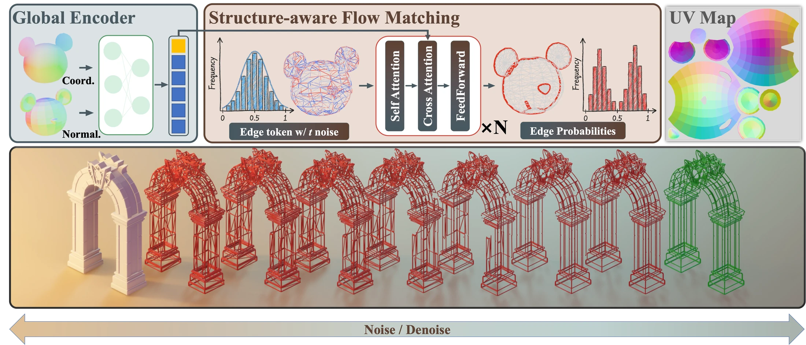
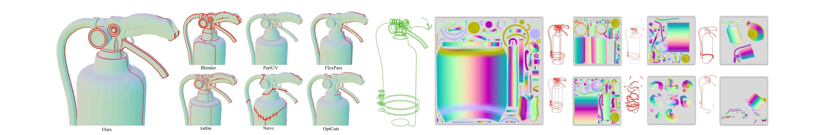

Topology-aware
Edge tokens explicitly encode mesh connectivity, keeping predicted cuts aligned with the underlying surface without 3D projection.
SIGGRAPH Asia 2026 · Conference Papers
Overview
UV cutting and unwrapping are fundamental to computer graphics, but optimizing only geometric distortion can ignore the semantic coherence expected from artist-authored layouts. Existing autoregressive generators improve semantics, yet can introduce projection errors, artificial sequence-order bias, and locally inaccurate cuts.
SeamFlow instead relaxes discrete mesh cutting into continuous flow matching over a high-dimensional edge-probability space. An edge-token evolution network combines local mesh topology with global shape context and integrates a probability-flow ODE from Gaussian noise to a seam distribution. The result is a topology-aware, order-free generator that produces semantically coherent seams with low distortion.
Core contributions
Edge tokens explicitly encode mesh connectivity, keeping predicted cuts aligned with the underlying surface without 3D projection.
All edge probabilities evolve in parallel through a continuous flow, removing artificial autoregressive order and sequential decoding.
Local topological tokens are fused with a global shape prior to preserve long-range symmetry, components, and semantic structure.
Method
SeamFlow predicts the probability of cutting every mesh edge in one continuous process, then converts the resulting seam graph into a UV map with standard parameterization.

A global encoder extracts semantic context from coordinates and surface normals.
Self- and cross-attention transport noisy edge probabilities along the learned flow.
The final seam probabilities define a cut graph that is parameterized into UV islands.
Results
Evaluation on 2,000 unseen test meshes covers geometric distortion, seam rationality, runtime, user preference, texture generation, editability, and cross-resolution generalization.
Selected values from the paper's evaluation setup; distortion and runtime are lower-is-better.

Fine cuts adapt to handles, joints, and elongated branches, while broad smooth regions retain compact long-path seams.
Semantically aligned islands reduce discontinuities across object boundaries and preserve high-frequency text and logo details.
In the paper's user study, SeamFlow results were selected in the Top-1 by 61.0% and in the Top-2 by 81.8% of participants.
Reference
@inproceedings{zhao2026seamflow,
author = {Zhao, Yuming and Xian, Zangyueyang and Zhang, Qijian and
Liang, Rendong and Jia, Qin and He, Ying and Hou, Junhui},
title = {SeamFlow: Structure-Aware Flow Matching on Edge Probabilities
for Artist-Like UV Unwrapping},
booktitle = {SIGGRAPH Asia 2026 Conference Papers},
year = {2026},
articleno = {111},
numpages = {12},
publisher = {Association for Computing Machinery},
address = {New York, NY, USA},
doi = {10.1145/3829340.3842329},
url = {https://doi.org/10.1145/3829340.3842329}
}